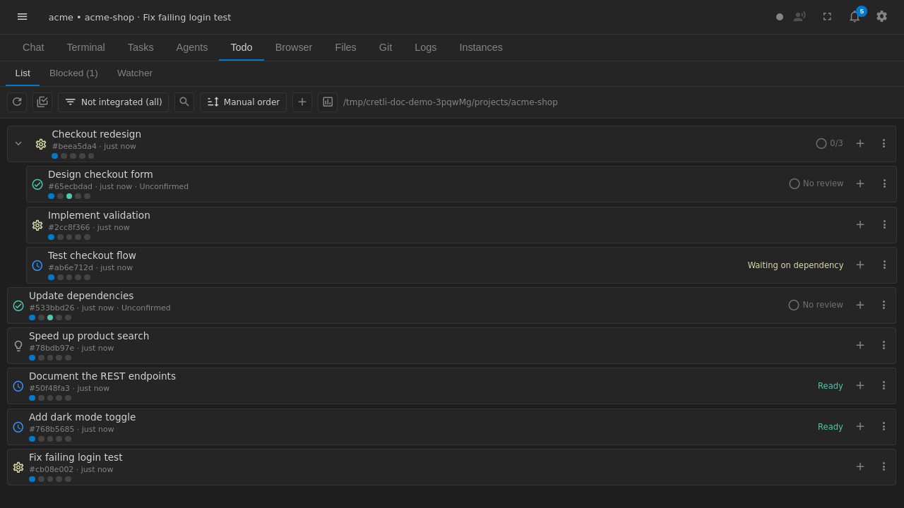

TODOs
A TODO tracks work from an idea to completion. The supported statuses are idea, ready, doing, done, and deferred. Use idea for an unshaped request, ready for work that can start, doing while it is active, and done after the acceptance criteria are met. deferred records work intentionally postponed.

TODOs can form trees. Children run sequentially by default, so a later child can depend on the result of an earlier one. A plan describes the intended changes and checks. A human must approve the plan before execution; an agent cannot approve its own plan.
The review badge summarizes the server-recorded review state for the TODO. It is an indication that a review record exists and is current according to the TODO workflow, not a substitute for reading the findings or checking the resulting files. Keep acceptance criteria concrete and report any remaining blocker instead of marking incomplete work done.